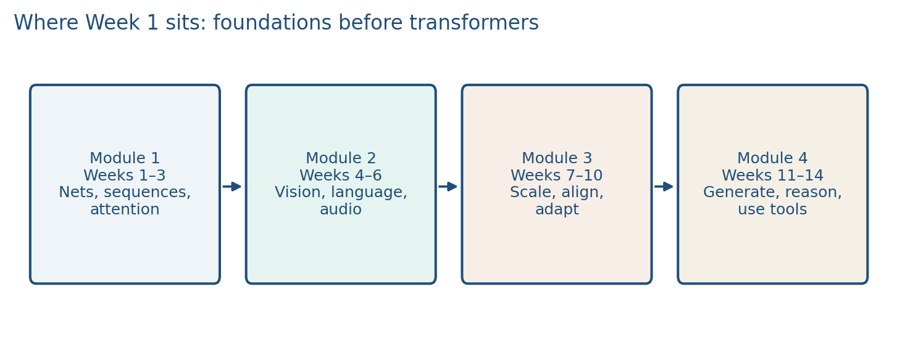
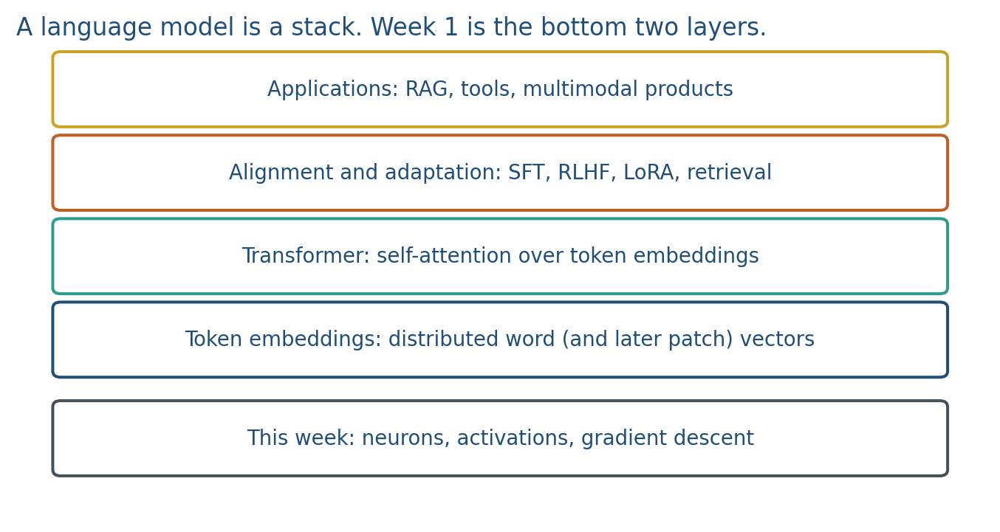

1.1 Course Map and the Semester Project
A self-contained LLM course. Week 1 is the base of the stack; next-token NLL is the cost; the project starts now.
These notes match the lecture slides. Use (slides) on the course hub for the deck.
This course is self-contained. DATA 441/641 and DATA 442/642 are not prerequisites. The listed prerequisite is DATA 427/627. Some ideas overlap those courses on purpose: embeddings, neural nets, and later transformers, so students who have not taken them can still finish an LLM project.
The main job of the semester is a project. Lectures and labs exist so that project has a backbone.
1. What the course is
DATA 443/643, Advanced Concepts in Large Language Models, is about how modern language systems are built, trained, adapted, and checked.
You will see:
- the architectures (feedforward nets, then sequence models, then transformers)
- how those models are scaled and aligned
- multimodal systems (vision, language, audio)
- generation, reasoning, retrieval, and tool use
Software: Python, PyTorch, Hugging Face, Jupyter. Canvas remains official for due dates.

A two-hour weekly meeting is not four independent mini-classes. You will usually get one 30–40 minute board note, a short video clip, discussion, and lab time. The other notes that week are homework or the second board block. Week 1 is the exception: all four notes are started in the same meeting so Lab 1 has a spine.
2. A language model is a stack
An LLM is not one trick. It is layers of ideas. Week 1 is the bottom: a neuron, a training loop, and a vector for a word. Week 3 puts attention on those vectors. Later weeks align, retrieve, and ship.

If you already know MLPs and Word2Vec from another class, treat this week as a fast map into the rest of the syllabus. If you do not, this week is the on-ramp.
When you use a chat product you are standing on the top of that stack (decoding, tools, a UI). The weights you never see still came from next-token training. If your project “uses GPT,” name the layer you will actually change: data, a prompt, an adapter, a retriever, or an eval.
3. What pretraining minimizes
A language model is a distribution over tokens. For a sequence ,
Each factor is a softmax over the vocabulary (note 1.2 writes the definition). Pretraining minimizes the negative log-likelihood of the observed tokens, also called the next-token cross-entropy:
Tiny numeric: suppose the model assigns . The NLL of that one token is . If it had assigned , the NLL would be . That scalar is what gradient descent (note 1.3) walks downhill on, at web scale.
You will not train a transformer this week. You will train the same kind of scalar on XOR and on a three-word skip-gram softmax.
4. The project starts now
Undergraduate teams and graduate students (solo or a small team, as posted on Canvas) will pick a problem in language, multimodal AI, retrieval, or alignment.
Typical shape:
- a question you can measure
- a public dataset or a well-scoped corpus
- a baseline, then one change that the course material justifies
- an ablation and an honest failure case
- a proposal, a talk, and an IEEE-style report
Graduate students also complete a mini-project on a recent paper (reproduce or extend one experiment). That is separate from the main project.
Do not wait until October to pick a topic. After Lab 1 you should be able to name a domain (news, clinical notes, code, speech, images+captions) even if the method is still “we will fine-tune something.”
5. What Week 1 is for
By Friday you should be able to:
- write the forward pass of one neuron and of a small MLP, including sigmoid, ReLU, , and softmax
- take two gradient-descent steps by hand, and write one ReLU unit’s chain rule
- explain skip-gram’s softmax over a tiny vocabulary, and why Word2Vec keeps the lookup table
- tell intrinsic evaluation of embeddings from extrinsic evaluation
- name one way geometry can encode bias, with the signed-projection probe from Lab 1
Notes 1.2–1.4 and Lab 1 do that work.
6. Teaching this note
This is a ~26 minute first-day block, including a short Karpathy clip. Draw the four-module roadmap, then the stack, then the next-token product and the 140 GB weights-file arithmetic. Spend the rest of the time turning a vague “I want to use an LLM” into a measurable project sentence. Play 0:00–8:00 of Karpathy in class (two files, then next-token compression). Stop before the long post-training tour. Lab 1 waits until notes 1.2–1.4 have landed; they share the same two-hour meeting.
Agreed two-hour plan (one meeting): 1.1 stack + project + short Karpathy (~26 min) → 1.2 neuron / XOR (~16 min) → 1.3 GD + one chain-rule (~18 min) → 1.4 cosine + skip-gram softmax + bias (~18 min) → Lab 1 start (~32 min). Remaining videos are homework, not in-class playback.
The lecture PDFs are 16:9, with a timed plan, one large formula, and a diagram that fills the frame. That form is taken from Stanford CS224N Winter 2026 Lecture 2, CS231N 2024 Lecture 4, and MIT 6.S191 2025 Lecture 1. Those decks are not copied; the algebra is this course’s.
Do not play a full Stanford CS224N lecture in this room. The 25-minute skip-gram Jacobian and the GloVe SVD assignment stay out of Week 1.
7. Worked example
Karpathy’s running example is Llama 2 70B. Each parameter is stored as 2 bytes (float16), so the weights file is
Write two columns on the board: parameters file vs run file. Then walk ChatGPT down the stack: next-token pretraining (Week 1–3), post-training (Weeks 8–9), retrieval/tools (Week 14). Circle the one layer a student project can actually change.
Now rewrite a bad topic. Bad: “Use LoRA on news.” Better: “Does a LoRA adapter on local news reduce entity hallucination vs. the base model, measured by exact-match on a 100-item holdout?”
8. Where students get stuck
- Treating the course as “how to prompt ChatGPT” instead of a stack you can measure.
- Picking a method first (“we will fine-tune”) before a question and a dataset.
- Assuming DATA 641/642 is required, then tuning out of Week 1.
- Confusing the 140 GB weights file with the extra memory needed to run the model.
9. Video
Watch Karpathy: Intro to Large Language Models, 0:00–20:00 (first 8 minutes in class; the rest as homework).
Pause at 0:20 (an LLM is two files: weights + a little code), 4:17 (pretraining as next-token compression of the internet), 8:58 (“dreams” / fluent but ungrounded text), and 14:14 (fine-tuning into an assistant). Stop at the 17:52 summary. The rest of the hour is optional.
Assigned after class, not in the meeting: MIT 6.S191 Lecture 1 from the perceptron (~17:20) through loss and gradient descent (~44:22). That is the homework-video twin of notes 1.2–1.3.
10. Sources the three teachers agreed on
Week 1 was rebuilt so a detail-first teacher, a classical-book teacher, and a current-coursework teacher could share one spine.
Keep from the existing notes: the self-contained on-ramp; the LLM as a stack; Llama 2 70B size arithmetic; a project sentence that is a question plus a metric; then ; affine collapse; two gradient-descent steps plus overshoot; the four-box loop and zero_grad; the distributional / distributed / embedding triangle; cosine; intrinsic vs. extrinsic; bias as geometry; Lab 1 XOR plus the constructed 2-D probe.
Add (this week’s notes and slides): softmax as a definition, not a Jacobian; the sigmoid formula; ; an XOR forward table with explicit weights; parameter counts 3 vs. 33; BCEWithLogitsLoss on logits ; one ReLU-neuron chain rule; skip-gram softmax with a numeric example; embedding as a lookup / nn.Embedding; the Lab 1 bias probe .
Books (read, do not skim-cite):
- Goodfellow, Bengio, Courville, Deep Learning, Chapter 6 opening and §6.1 XOR: deeplearningbook.org/contents/mlp.html
- Nielsen, Neural Networks and Deep Learning, Chapter 1 on gradient descent (stop before the long MNIST writeup): neuralnetworksanddeeplearning.com/chap1.html
- Jurafsky & Martin, Speech and Language Processing (draft of 19 August 2026), Chapter 5 Embeddings: web.stanford.edu/~jurafsky/slp3/5.pdf. The live draft moved vector semantics here; do not follow an older “Chapter 6 = embeddings” label.
- Mikolov et al. (2013a), Efficient estimation of word representations, §§1–3: arXiv:1301.3781
Cite, do not assign: Rumelhart, Hinton, Williams (1986) on backpropagation; Mikolov et al. (2013b) on negative sampling.
Universities we copy intuitions from, not homework from: Stanford CS224N (Winter 2026) Lectures 2–3 on word vectors and neural nets; CS231N notes on the neuron, backprop as gates, and SGD; MIT 6.S191 Lecture 1; CMU 11-711 on embedding lookup and . Optional extra, not this week’s lab: CS224N Assignment 1 (exploring word vectors).
Do not add to Week 1: Adam’s derivation, attention diagrams, LoRA, GloVe SVD homework, the softmax Jacobian, negative-sampling derivation, the GELU formula, CS224N matrix calculus / NER / dependency parsing, or a full NLP-history lecture.
On slides, use the classical names next to the modern ones: autograd = backprop; embedding = distributed representation; loss = empirical risk / cost.
11. Practice
-
Name one product you use that sits on the top of the stack in the figure. Which lower layer would you have to change to make it safer?
-
A classmate took DATA 641. Another did not. Why is Week 1 still required for both?
-
Write one sentence that could be a project question (not a method). Example: “Can retrieval cut hallucination on AU policy PDFs?” is a question. “Use LoRA” is not.
-
Llama 2 70B stores each parameter as 2 bytes. Compute the weights-file size in GB. If you instead stored the same 70 billion parameters as 1-byte integers, what would the file size be?
-
A model assigns and . What is the NLL of the two-token continuation “cat sat”? (Natural log is fine; leave it as .)